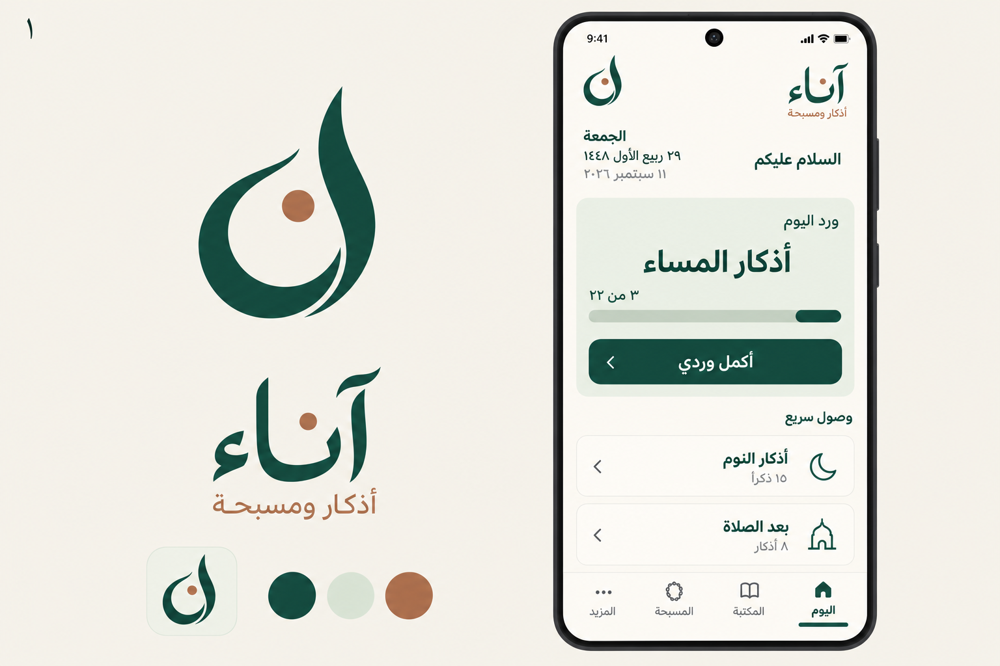
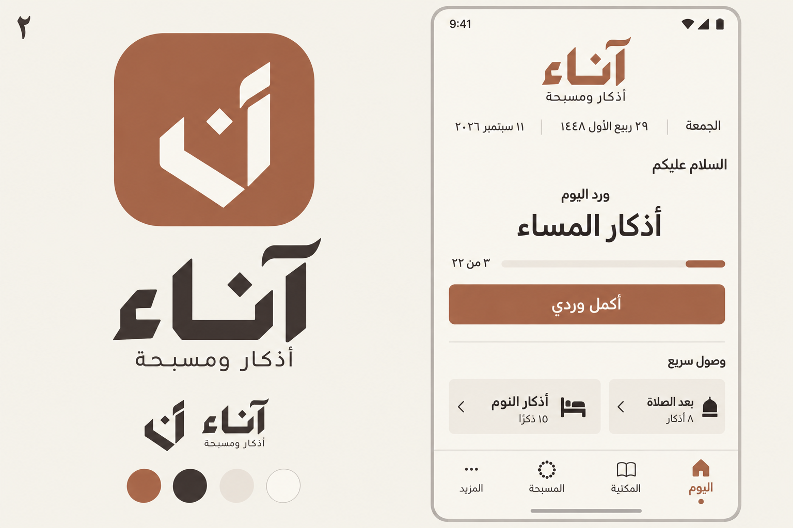
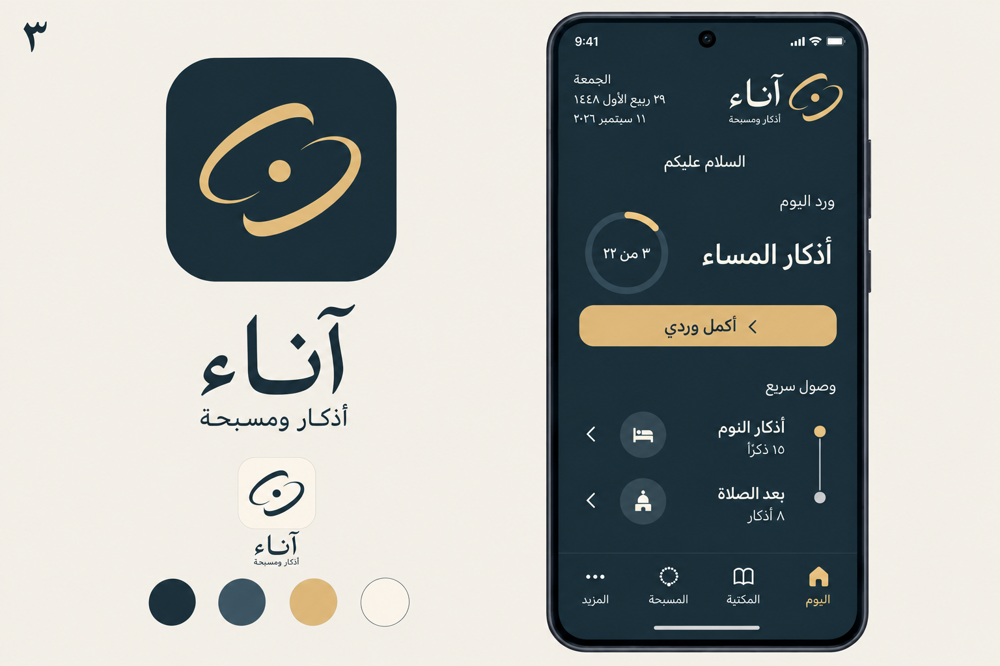

١ · الانسيابي
أخضر عميق · خطوط مرنة

الاسم والشعارحركة منحنية تستلهم حرف النون، مع نقطة بلون نحاسي ورسم مرن للاسم.
ترتيب الصفحةهوية خفيفة أعلى الشاشة، ثم بطاقة واضحة لورد اليوم وزر للإكمال، وبعدها الوصول السريع في صفين.
٢ · الهندسي
طيني دافئ · حروف هندسية

الاسم والشعاررسم هندسي مستلهم من الخط الكوفي، وعلامة مختصرة من ضربتين ونقطة، قابلة للظهور بلون واحد.
ترتيب الصفحةالاسم في الوسط والتاريخ في سطر مختصر. الورد هو العنصر الرئيسي دون إطار كبير، وتحته زر الإكمال واختصاران متجاوران.
٣ · الليلي
كحلي داكن · لمسات ذهبية

الاسم والشعارقوسان مفتوحان حول نقطة يعبّران عن تتابع الأوقات، مع رسم عربي خفيف للاسم.
ترتيب الصفحةالاسم والتاريخ متقابلان، ثم عنوان الورد مع تقدم دائري صغير، وزر واضح، وقائمة مختصرة للوصول السريع.
التصميم المعتمد: الأول، الانسيابي. نُفذ رسم الاسم والعلامة والأيقونة وترتيب الصفحة الرئيسية بموارد متجهة تدعم الوضعين الفاتح والليلي.